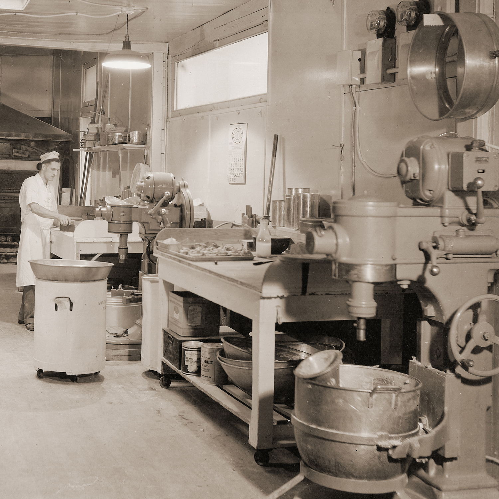
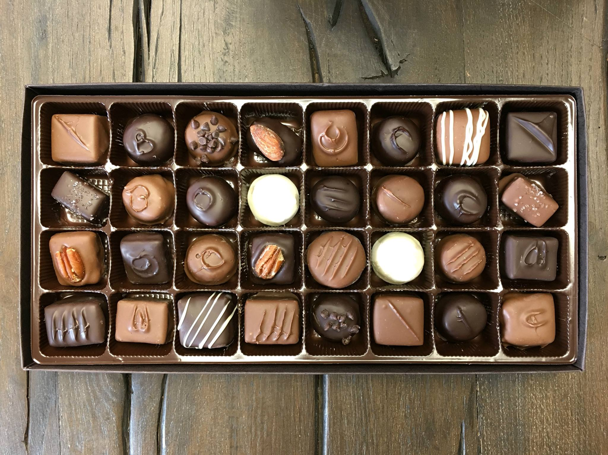

Five generations of Winans tradition
Established in the late 1800's and in its 4th generation of family ownership, Winans Chocolates and Coffees brings cutting edge flavors and time tested quality. We have established that urban edge in America's heartland. Winans owner, Joe, travels the world in search of consciously traded coffees and cacaos. Our products reflect our commitment to quality and sustainability across the globe and right here at home where we focus on purchasing local at every opportunity. Our ethically sourced coffee is locally roasted in Piqua, Ohio.
Although the business has been handed down from great grandfather to son-in-law to sons, then to grandsons and next to great granddaughter, the family recipes, dedication to fresh ingredients and the old copper cooking kettles remain the same.


